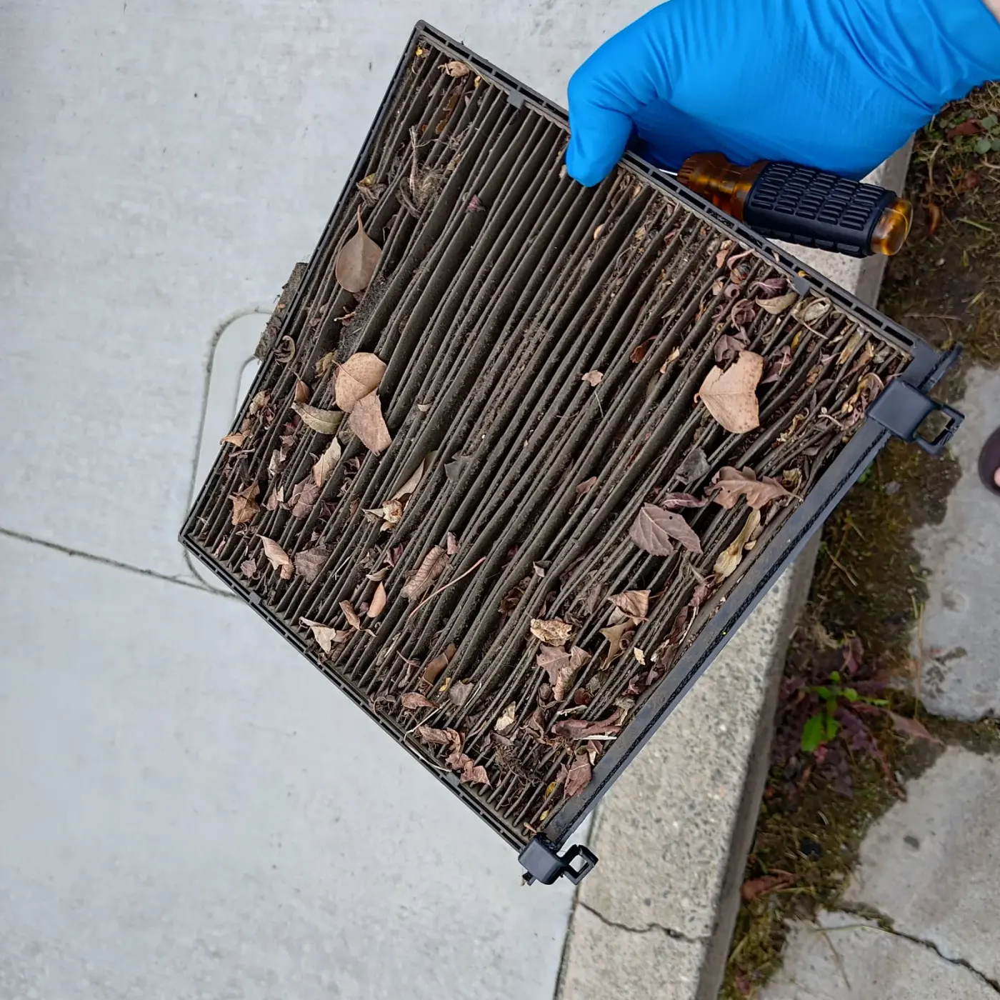
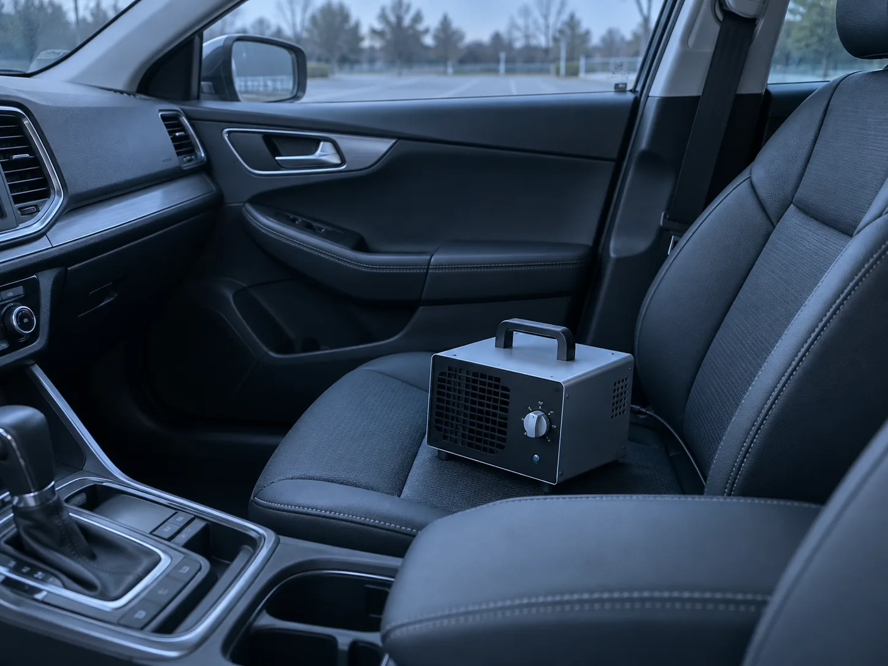
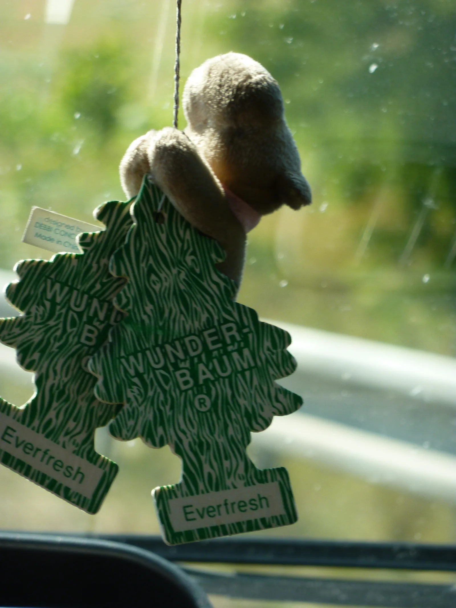

▲ 담배 연기는 눈에 보이지 않게 흩어진 뒤에도 시트와 내장재 표면에 입자로 남는다 ⓒ CarPrism (AI 생성 이미지)
차 안에서 담배를 몇 번 피웠을 뿐인데, 냄새는 몇 달이 지나도 사라지지 않는다. 창문을 열어 환기를 시키고 방향제를 여러 개 달아봐도 시동을 걸고 히터나 에어컨을 켜는 순간 다시 냄새가 올라온다.
그 이유는 담배 연기가 단순히 '냄새'로 떠 있다 사라지는 것이 아니라, 니코틴과 타르 성분이 미세한 입자 형태로 내장재 표면에 들러붙기 때문이다. 방향제는 이 냄새를 일시적으로 덮을 뿐, 흡착된 입자 자체를 분해하거나 제거하지 못한다.
1. 담배 냄새는 왜 이렇게 오래 남을까 — 흡착의 원리
담배 연기에는 니코틴, 타르, 각종 휘발성 유기화합물(VOC)이 포함돼 있다. 이 성분들은 연소 과정에서 미세한 기체·입자 형태로 퍼지는데, 차량 실내처럼 밀폐된 공간에서는 빠져나가지 못하고 표면에 내려앉아 굳는다.
| 부위 | 흡착 특성 |
|---|---|
| 시트 섬유·가죽 | 직물 시트는 표면적이 넓어 입자가 깊숙이 파고들며, 가죽 시트도 이음새·통기구 틈으로 스며듦 |
| 바닥 매트·카펫 | 발밑 매트는 담뱃재·타르가 직접 떨어지는 부위로 장기간 오염이 누적됨 |
| 헤드라이너(천장재) | 연기가 위로 올라가 가장 먼저, 가장 많이 접촉하는 부위. 교체 없이는 완전 제거가 어려운 경우도 있음 |
| 에어컨·히터 시스템 | 흡입구를 통해 들어간 연기 입자가 에바포레이터(증발기)와 덕트 내부에 쌓여, 송풍할 때마다 냄새가 재순환됨 |
📍 방향제가 안 통하는 이유
방향제는 공기 중에 향 성분을 퍼뜨려 냄새를 가리는 방식이다. 시트나 헤드라이너에 이미 흡착된 니코틴·타르 입자를 화학적으로 분해하거나 제거하지 못하기 때문에, 방향제 향이 옅어지거나 히터·에어컨을 켜서 공기 순환이 강해지면 원래의 담배 냄새가 다시 올라온다.
2. 기본 청소부터 시작한다 — 진공청소와 스팀 세차
어떤 탈취 제품을 쓰기 전에, 먼저 물리적으로 오염원을 제거하는 것이 순서다. 담뱃재와 타르 찌꺼기가 남아있는 상태에서는 어떤 방향제나 탈취제를 써도 효과가 제한적이다.
✅ 기본 청소 단계
· 1단계 — 강력 진공청소: 시트 틈새, 도어 포켓, 매트 밑까지 꼼꼼히 흡입
· 2단계 — 시트·매트 물세탁 또는 스팀 세척: 직물 시트는 전용 세제로 샴푸 후 완전 건조 필수
· 3단계 — 고온 스팀 세차: 도어 트림, 천장, 시트 섬유 깊숙한 곳까지 고온 스팀으로 유기물과 악취 분자를 녹여 분해
· 4단계 — 완전 건조: 습기가 남으면 곰팡이 냄새가 새로 생겨 오히려 냄새가 복합적으로 악화될 수 있음

▲ 캐빈 필터가 이 정도로 오염되면 필터 자체가 냄새의 발생원이 될 수 있다 ⓒ Wikimedia Commons (CC BY-SA 4.0)
기본적인 실내 청소·소취 상식은 아래에서도 확인할 수 있다. YTN 자동차 담배 냄새 제거법 바로가기
3. 흡착제 활용 — 베이킹소다·활성탄·커피 찌꺼기
기본 청소를 마쳤다면, 그다음은 남은 냄새 분자를 흡착·중화시키는 단계다. 방향제와 달리 이 방법들은 냄새를 가리는 게 아니라 실제로 흡수하는 방식이라 상대적으로 근본적인 접근에 가깝다.
| 방법 | 특징 | 사용 시 유의점 |
|---|---|---|
| 베이킹소다 | 산성 냄새 분자를 중화, 저렴하고 안전 | 얕은 그릇에 담아 시트 아래·트렁크에 두고 1~2일 후 진공청소 |
| 활성탄(숯) 탈취제 | 다공성 구조로 냄새 분자를 물리적으로 흡착, 지속력 상대적으로 김 | 습기에 노출되면 흡착력이 떨어지므로 주기적 교체·햇볕 건조 필요 |
| 커피 찌꺼기 | 탄소 성분이 냄새를 일부 흡착, 은은한 향 부가 효과 | 완전히 말린 상태로 사용하지 않으면 곰팡이 발생 위험 |
📍 흡착제는 '보조 수단'이다
베이킹소다나 활성탄은 이미 청소가 끝난 상태에서 남아있는 잔여 냄새 분자를 줄이는 보조 역할에 가깝다. 시트나 헤드라이너에 타르가 그대로 남아있는 상태에서 흡착제만 두는 것으로는 근본적인 해결이 되지 않는다는 점을 기억해야 한다.
4. 에어컨 시스템 관리 — 필터 교체와 송풍구 청소
겉으로 보이는 시트와 매트를 아무리 청소해도 냄새가 계속 난다면, 원인은 에어컨 시스템 내부에 있을 가능성이 크다. 흡연 중 켜둔 에어컨이나 히터를 통해 연기 입자가 캐빈 필터와 증발기(에바포레이터)에 쌓였을 수 있기 때문이다.
✅ 에어컨 시스템 관리 체크리스트
· 캐빈(실내) 에어필터 교체: 오염이 심하면 필터 자체가 악취 발생원이 되므로 즉시 교체
· 송풍구·덕트 청소: 정비소에서 폼 클리너나 전용 세정제로 덕트 내부 세척 가능
· 에바포레이터 소독: 곰팡이·니코틴이 깊이 침투한 경우 전문 장비로 증발기 세척이 필요할 수 있으며, 상태가 심하면 부품 교체 비용이 발생할 수 있음
· 정기 점검 주기: 흡연 이력이 있는 차량은 일반 권장 주기보다 더 자주 필터 상태를 확인하는 것이 좋음
5. 그래도 안 없어진다면 — 전문 디톡스 세차와 오존 처리
일반 청소와 흡착제로도 냄새가 남아있다면 전문 업체의 디톡스(냄새 제거) 서비스를 고려할 수 있다. 전문 업체는 고온 스팀 세척, 오존 처리, 항균 코팅 등을 조합해 일반 셀프 세차보다 강도 높은 처리를 진행한다.

▲ 오존발생기는 밀폐된 무인 상태에서만 사용해야 하며, 사용 후 충분한 환기가 필요하다 ⓒ CarPrism (AI 생성 이미지)
⚠️ 오존발생기, 이렇게 위험할 수 있다
오존발생기는 강력한 산화력으로 냄새 분자를 분해하지만, 사람이 탑승한 상태에서는 절대 사용해서는 안 된다. 오존 농도가 일정 수준을 넘으면 호흡기 자극, 기침, 두통을 유발할 수 있으며, 국내 환경정책기본법상 8시간 평균 허용 기준(0.06ppm)보다 훨씬 높은 농도가 차량 내부에서 발생하는 경우가 보고된 바 있다. 또한 고농도 오존은 활성산소 작용으로 고무·플라스틱 부품을 산화·손상시킬 수 있어, 문 웨더스트립이나 대시보드 소재가 장기적으로 변색·경화될 위험도 있다. 사용한다면 차량 문을 닫고 사람과 반려동물 없이 진행한 뒤, 종료 후 충분히 환기해야 한다.
✅ 전문 디톡스 서비스 이용 시 확인할 점
· 오존 처리와 스팀 세척을 병행하는지, 단순 향 코팅만 하는 업체는 아닌지 사전에 확인
· 에바포레이터 내부 세척까지 포함되는지, 별도 비용이 발생하는지 견적 단계에서 확인
· 시공 후 최소 하루 이상 환기를 권장하는 업체인지 — 급하게 마무리하는 업체는 주의
6. 중고차 거래와 담배 냄새 — 감가로 이어지는 이유
담배 냄새는 중고차 시세에도 직접적인 영향을 준다. 해외 자동차 경매 업체의 조사에 따르면, 악취나 매캐한 냄새가 나는 차량은 그렇지 않은 차량보다 최소 3% 이상 가치가 낮게 평가되는 것으로 알려져 있다.
| 입장 | 확인·대응 사항 |
|---|---|
| 판매자 | 인수 전 전문 디톡스 세차·필터 교체로 냄새를 최대한 제거해두면 시세 방어에 도움 |
| 구매자 | 시승 전·중·후로 나눠 냄새를 확인하고, 냄새가 남아있다면 클리닝·부품 교체 견적을 근거로 가격 협상 |
📍 완전한 제거가 어려운 경우도 있다
일반적인 실내 클리닝으로 상당 부분 개선되지만, 에바포레이터에 깊게 침투한 냄새는 완벽하게 제거되지 않는 경우가 있고 이 경우 부품 교체에 적지 않은 비용이 들 수 있다. 흡연 차량을 구매할 계획이라면 이 점을 감안해 가격을 협상하거나, 애초에 후보에서 제외하는 것도 방법이다.
7. 임시방편과 근본 해결책, 헷갈리지 말 것
방향제나 탈취 스프레이는 나쁜 방법이 아니지만, 그 자체로는 냄새를 없애지 못한다는 점을 분명히 알아야 한다. 흡착된 입자를 제거하지 않은 채 향으로 덮기만 하면, 오히려 담배 냄새와 인공 향이 뒤섞여 더 불쾌한 냄새가 나는 경우도 많다.

▲ 방향제는 향으로 냄새를 덮을 뿐, 흡착된 담배 입자 자체를 제거하지는 못한다 ⓒ Wikimedia Commons (CC BY 2.0)
| 구분 | 방법 | 효과 |
|---|---|---|
| 임시방편 | 방향제, 탈취 스프레이 | 일시적으로 향을 덮음 — 근본 원인(흡착 입자) 미제거, 효과 지속 시간 짧음 |
| 근본 해결책 | 진공청소+스팀세척, 흡착제, 필터·에바포레이터 관리, 전문 디톡스 | 오염원 자체를 물리적·화학적으로 제거 — 시간과 비용은 더 들지만 효과 지속적 |
8. 요약
담배 냄새가 차 안에서 오래 남는 이유는 니코틴·타르 입자가 시트, 매트, 헤드라이너, 에어컨 시스템 표면에 물리적으로 흡착되기 때문이다. 방향제는 이 냄새를 잠시 가릴 뿐 근본 원인을 없애지 못한다.
근본적인 제거를 위해서는 강력 진공청소와 스팀 세척으로 오염원을 물리적으로 제거한 뒤, 베이킹소다·활성탄 같은 흡착제로 잔여 냄새를 줄이고, 에어컨 캐빈 필터 교체와 에바포레이터 관리까지 함께 신경 써야 한다. 그래도 해결되지 않는다면 전문 디톡스 세차를 고려할 수 있다.
오존발생기는 효과가 강력한 만큼 위험도 크다. 반드시 사람과 반려동물이 없는 상태에서 사용하고, 종료 후 충분히 환기해야 한다. 흡연 차량은 중고차 거래에서 명백한 감가 요인이 되므로, 판매 전 미리 관리하거나 구매 시 이를 감안해 협상하는 것이 현명하다.